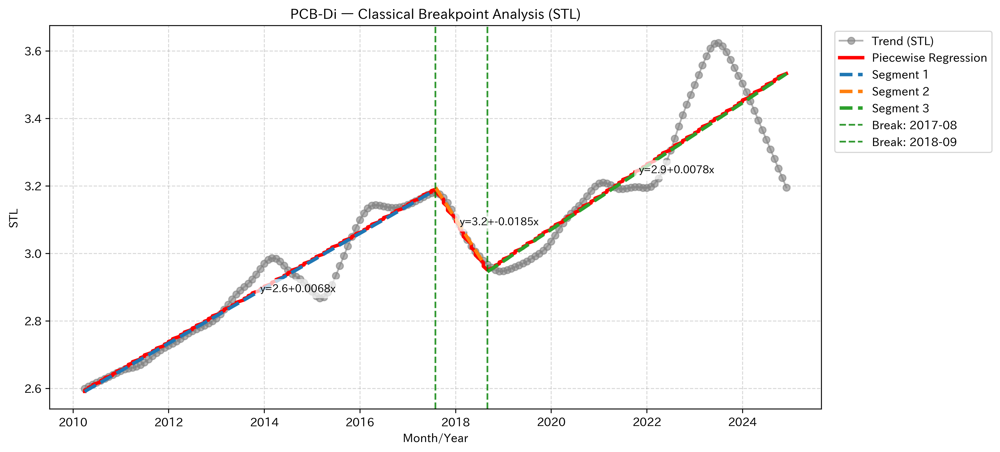
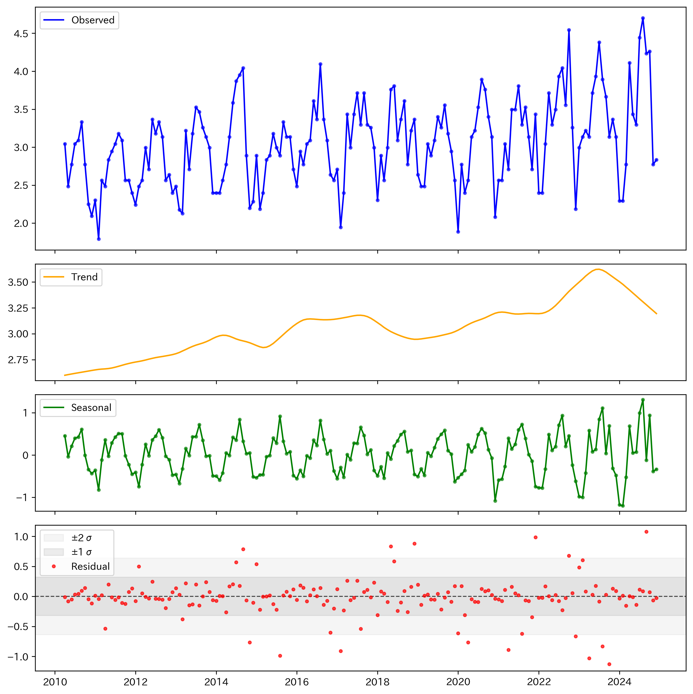
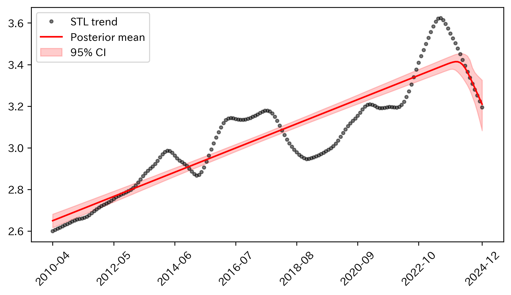
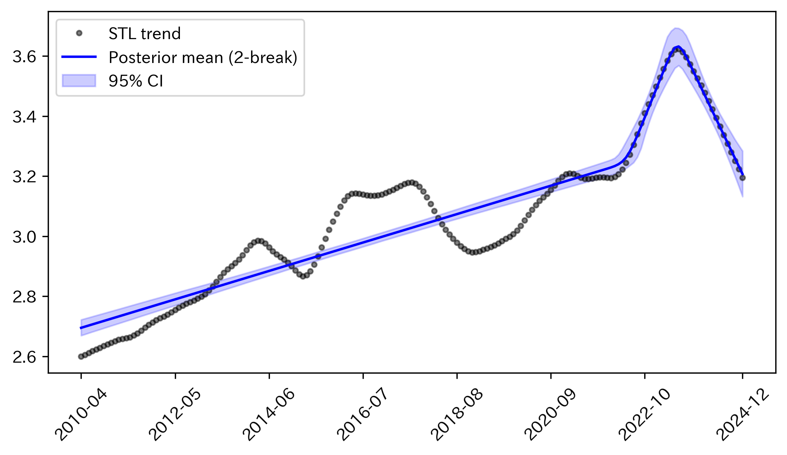
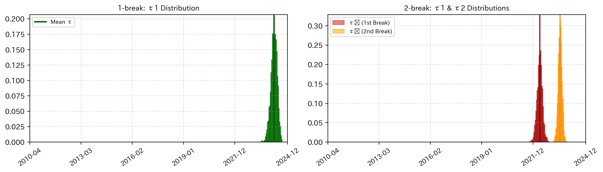
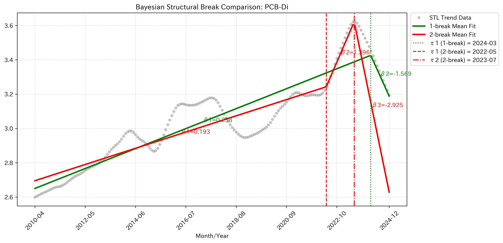
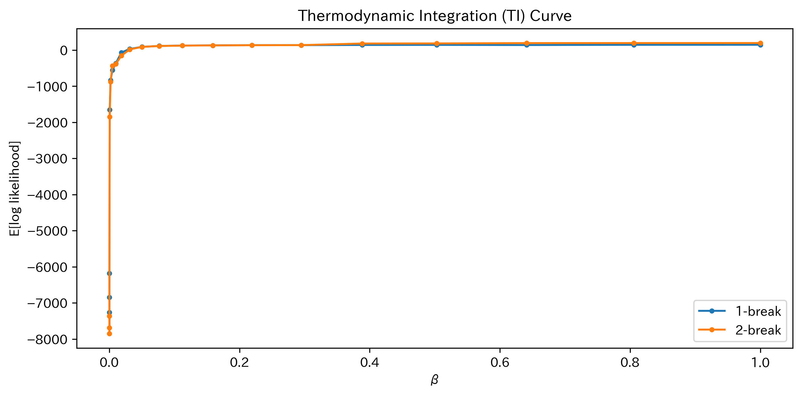

| Section | Start | End | Slope | P-value | R² |
|---|---|---|---|---|---|
| 1 | 2010-04 | 2017-07 | 0.00679 | 0.0 | 0.9407 |
| 2 | 2017-08 | 2018-08 | -0.01852 | 0.0 | 0.9888 |
| 3 | 2018-09 | 2024-12 | 0.00782 | 0.0 | 0.7092 |
STL 分解プロットは 4 段構成（Observed / Trend / Seasonal / Residual）です

1-break model

2-break model


事後分布の平均パラメータ（α, β, τ）を用いて計算した代表的なフィット曲線です。

逆温度 β の変化に伴う期待対数尤度の推移です。この曲線の下側の面積の差が、モデルの優劣（周辺尤度の差）になります。

【判断のロジック】
総合ペナルティスコアは 1-break (1.00) vs 2-break (2.00) となり、両者の性能に一長一短があるが、多角的な堅牢性ペナルティスコアに注意が必要である。
統計モデルの原則（オッカムの剃刀）に従い、過剰なパラメータ化を避けるため、よりシンプルで頑健な「1-break モデル」をベースに考察を進めることを推奨します。
*(注: 「5. TI」タブで熱力学的積分を実行しましたが、{'n_beta': 20, 'num_warmup': 2000, 'num_samples': 4000, 'beta_schedule': 'Power-law (推奨)'}で tv_ratio1=1.00 OKおよび tv_ratio2=1.12 Failedであり、logZ1=123.94, logZ2=152.89は、モデル比較に活用できない可能性があります。成功した場合は、厳密な周辺尤度に基づく検証結果がここに追加されます。⚠️モデル自体がデータに適合していない場合はTIを実行してもモデルの比較には活用できませんので、計算コストの高い再計算は慎重に判断してください。)*
WAIC(Widely Applicable Information Criterion)はモデルの説明力を定量的に評価する指標ですが、モデル選択の唯一の基準ではありません。特に、構造変化点の推定の安定性や、実務的な解釈のしやすさも重要な要素となります。
2-break_strongly_preferred
WAIC判定: 構造変化点が2箇所ある 「2-breakモデル」 が、100.0% の確率で優位と判定されました
| Model | Weight w | WAIC | Params (standardized: 2017-08) |
|---|---|---|---|
| 1-break model | 0.0 % | -292.56 | α: 3.059, β1: 0.238, β2: -1.569, τ: 2024-03 |
| 2-break model | 100.0 % | -375.02 | α: 3.028, β1: 0.193, β2: 1.396, β3: -2.925, τ1: 2022-05, τ2: 2023-07 |
Bayesian model–estimated timing of structural changes (converted to calendar dates).
| Model | Breakpoint | Mean | 95% CI (Low) | 95% CI (High) |
|---|---|---|---|---|
| 1-break | τ₁ | 2024-03 | 2023-10 | 2024-07 |
| 2-break | τ₁ | 2022-05 | 2022-01 | 2022-08 |
| τ₂ | 2023-07 | 2023-04 | 2023-09 |
| 評価指標 (Metrics) | 1-break Model | 2-break Model | |
|---|---|---|---|
| 0 | ① 代表線適合度 (RMSE) ↓ | 0.1036 (pt: 0.00) | 0.1387 (pt: 1.00) |
| 1 | ② 非線形ギャップ (Gap) ↓ | 0.0044 (pt: 0.00) | 0.1126 (pt: 1.00) |
| 2 | ③ 変化点の不確実性 (CI幅) ↓ | 8.4日 (pt: 1.00) | 6.2日 (pt: 0.00) |
| 3 | ④ τ₂ − τ₁ が 全期間ｘ0.05である確率（分離度)↓ | 非該当 (pt: 0.00) | 1.0000 (pt: 0.00) |
| 4 | ⑤ 予測性能（RMSE_pred） ↓↑ | 0.1036 (2-break is better) | 0.0815 |
| 5 | 📊 **(堅牢性ペナルティ)** ↓ | **(1.0)** | **(2.0)** |
| 6 | 形式的TIペナルティスコア(Jeffreys' Scaleに対応 0 - 4) ↓ | 利用不適 | 利用不適 |
| 7 | 📊 総合ペナルティスコア **(堅牢性ペナルティ)** ↓ | 1.00 **(1.0)** | 2.00 **(2.0)** |